Chapter 1
Getting started
What Verity is
Verity is where your organisation keeps the evidence that its security promises are true. One place holds the controls you claim to operate, the proof that each one works, the policies people have signed, the risks you have accepted, the third parties you rely on, and the assets and weaknesses underneath all of it.
The job it does for you: when an auditor asks "show me", the answer is a link, not a week of chasing.
Signing in for the first time
You will arrive either from an invitation email or from a workspace your organisation already created.
- Open the link in your invitation and set a password. It must be at least 12 characters and mix upper case, lower case, a digit and a symbol. Your organisation's administrator can make the rule stricter.
- Sign in with your work email and that password.
- If your workspace requires two factor authentication for your role, you will be asked to set it up now. Scan the QR code with an authenticator app such as 1Password, Authy or Google Authenticator, then type the six digit code.
- Save your recovery codes somewhere safe and offline. They are shown once. If you lose your phone, they are how you get back in.
Get Started
The first screen you land on is a setup checklist that tracks your real progress.
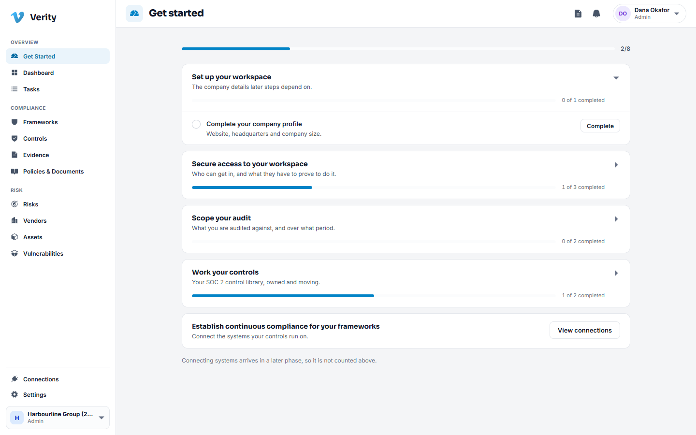
It groups the setup into five pieces: your workspace details, who can get in and what they must prove, what you are being audited against, working your controls, and connecting the systems those controls run on. The counter at the top is your actual state, not a demonstration, and each item links straight to the screen that completes it.
You can leave it at any time and come back. Nothing expires.
Your first half hour
You do not have to do everything at once. This order gets you useful fastest.
- Look at your controls. Go to Controls. Every workspace starts with the full SOC 2 control library already adopted, so this list is not empty. See Frameworks and controls.
- Give the important ones an owner. A control with no owner is nobody's job. Filter the register by Owner: None and work down the list.
- Put your people in. Settings > Access > People. Invite the people who will own controls, approve policies and answer vendor questions. See Settings and administration.
- Load what you already have. Most teams already keep an asset list and a vendor list in a spreadsheet. Import them: Assets and Vendors.
- Attach your first evidence. Pick one control you know you operate and attach the proof. See Evidence.
Switching workspace
The workspace switcher sits at the bottom of the left navigation, showing the organisation name and your role in it. Click it to change workspace. Your session, your permissions and everything you can see change with it. Nothing you do in one workspace is visible from another.
Signing out and sessions
Open the menu on your name, top right, and choose sign out. Sessions expire on their own after a period of inactivity set by your administrator, so a shared machine does not stay signed in forever.
Forgotten password
Use Forgot password? on the sign in screen. You will get an email with a reset link. If two factor authentication is on for your account, you will still be asked for a code after resetting, and your recovery codes still work.
Chapter 2
Finding your way around
Every module in Verity is built from the same four pieces. Learn them once and the rest of the product reads itself.
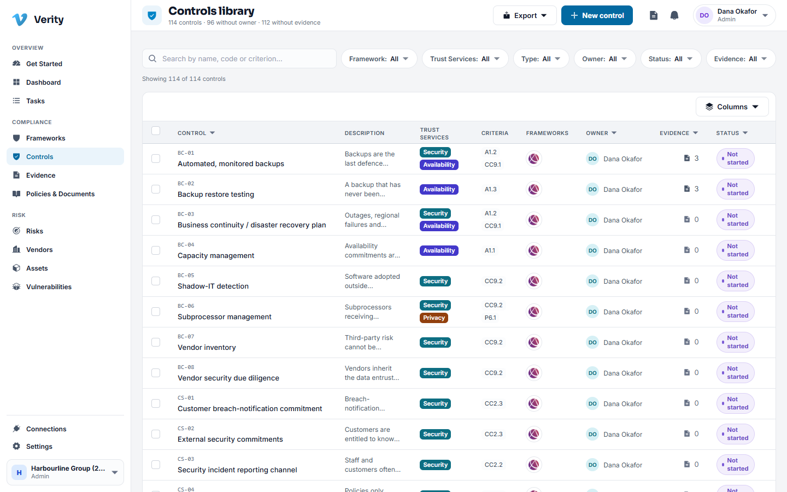
1. The navigation
The left rail never changes. It is grouped by what you are trying to do:
- Overview: Get Started, Dashboard, Tasks.
- Compliance: Frameworks, Controls, Evidence, Policies and Documents.
- Risk: Risks, Vendors, Assets, Vulnerabilities.
- Bottom: Connections and Settings.
Your workspace and role show at the very bottom. Click there to switch workspace.
You only see modules your role allows. If something in this guide is missing from your navigation, your role does not include it. See the permission table.
2. The module header
Every module opens on the same pattern: an icon, the module name, a live one line summary underneath, the buttons for the things you can start here, and a strip of tabs for the sections inside.
The summary line is real. On Controls it reads like "114 controls, 96 without owner, 112 without evidence", which is usually the fastest read on where you stand.
Most modules have an Overview tab (charts and counts), a Register tab (the list) and, where there is something to configure, a Settings tab.
3. The register
The list of records. Registers work the same way everywhere:
- Search by name or code in the box at the top left.
- Filters sit in one row. They narrow the list and stack, so Owner plus Status
plus Framework is three filters at once.
- Columns lets you choose what the table shows. Your choice is remembered.
- Sorting: click a column heading. Click again to reverse it.
- The row menu (the ⋯ at the end of a row, or an Actions button) holds the
things you can do without opening the record.
- Export produces a spreadsheet of what you are currently looking at, filters
included.
4. The detail page
Clicking a row opens the record. Detail pages share a layout:
- The header carries the name, the badges that matter (tier, severity, status)
and the primary action.
- Tabs divide the record. Overview is the summary; the rest are the deep ends.
- The right hand column holds the facts that do not change often: ownership,
dates, where the record came from.
- Linked records appears on assets, findings, controls and documents. It
answers "what else is attached to this" in one place, and you can link something new from there.
- Activity or History is the record's own trail: who changed what and when.
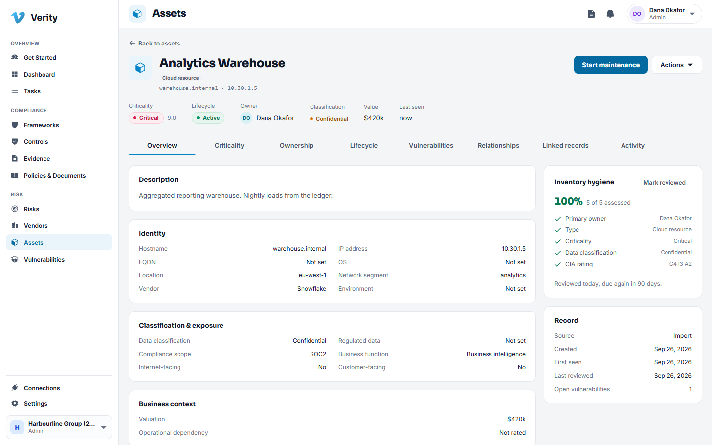
The things in the top bar
- The document icon opens the pending acknowledgements and approvals waiting on
you personally.
- The bell is your notification list: policies to sign, approvals to decide,
findings escalated to you, tasks that are about to breach their service level.
- Your name opens the profile and sign out menu.
Status, colour and badges
Colour means the same thing everywhere.
| Look | Meaning |
|---|---|
| Green | Passing, active, complete, on track |
| Amber | Needs review, due soon, partially answered |
| Red | Failing, overdue, critical, blocked |
| Grey | Not started, not set, not applicable |
| Violet | Informational, for example the Trust Services category on a control |
A Soon badge means the screen is a placeholder for work that is not built yet. Nothing behind one holds real data.
When something goes wrong
Verity does not show technical errors. If an action cannot complete you get a plain sentence explaining what happened and what to do next. If you see a message that says the request could not be processed and nothing more, that is a bug worth reporting: note what you were doing and tell your administrator.
Chapter 3
Frameworks and controls
What a control is here
A control is something your organisation does to keep a promise: backups run and are tested, access is removed when someone leaves, changes are reviewed before release. A framework such as SOC 2 is a list of criteria an auditor will check, and each control you operate answers one or more of them.
Verity gives every new workspace the whole SOC 2 control library already adopted, so you start by editing reality rather than building a list from nothing.
Frameworks
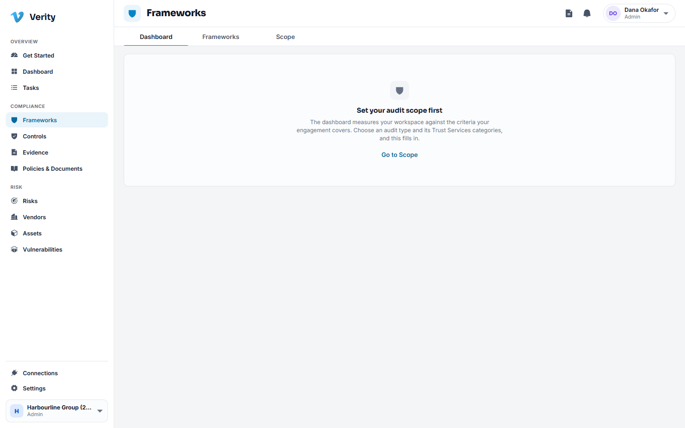
Frameworks has three sections.
- Dashboard is the posture read: how many controls are passing, which criteria
are weak, what is in review.
- Frameworks lists the frameworks available and which version you are working
to.
- Scope is where you record what is in and out of the audit, and why.
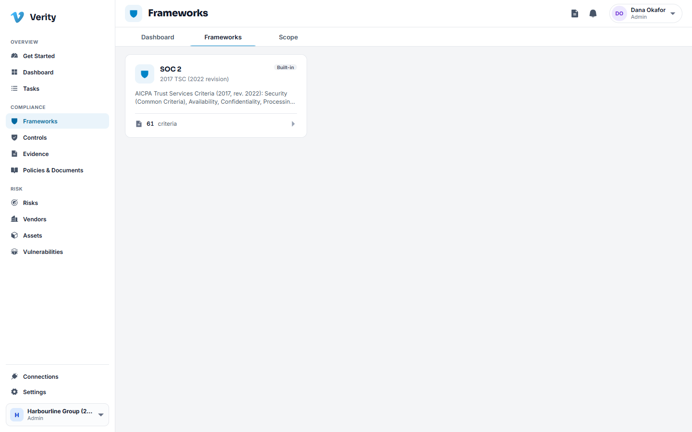
The controls library
Open Controls. The summary line under the title is the fastest read you have: how many controls exist, how many have no owner, how many have no evidence.
Each row shows the control code and name, the Trust Services categories it serves, the criteria it maps to, its owner, how many pieces of evidence are attached, and its status.
Status is what your team says about implementation:
| Status | Use it when |
|---|---|
| Not started | Nobody has begun |
| In progress | Work is under way but the control is not operating yet |
| Implemented | The control operates and you can prove it |
| Not applicable | The control genuinely does not apply, with a reason recorded |
Walkthrough: give a control an owner
- Go to Controls.
- Set the Owner filter to None. What remains is every control nobody has claimed.
- Click the control you want to assign.
- On the Overview tab, use the owner picker in the right hand column and choose a person.
The owner is a member of this workspace, not an email address. Change of ownership is recorded in the control's history.
Walkthrough: work a control end to end
- Open the control from the register.
- Read the statement: what this control has to achieve. Under it are the guidance steps, a short recipe for what operating it usually involves.
- Set the owner and move the status to In progress.
- Go to the Evidence tab and attach the proof. See Evidence.
- When the control genuinely operates and the proof is attached, set the status to Implemented.
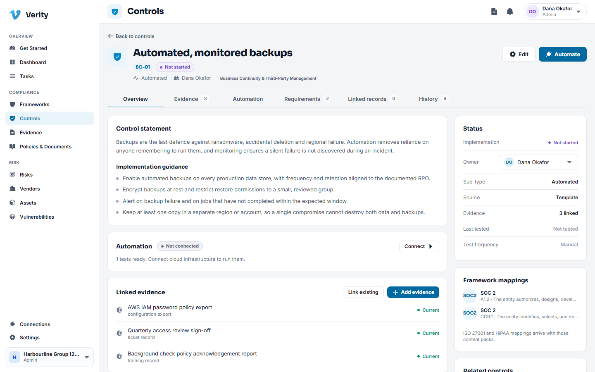
The tabs on a control
| Tab | What is there |
|---|---|
| Overview | The statement, guidance, owner, status |
| Evidence | Everything attached as proof, and the button to attach more |
| Automation | Checks that a connected system runs for this control on a schedule |
| Requirements | The framework criteria this control answers |
| Linked records | Risks, documents, assets and other records attached to it |
| History | Every change, who made it and when |
Automation
If your workspace has a connection to a system such as GitHub, some controls can be checked automatically. The Automation tab shows what runs, when it last ran and what it found, and the output is attached to the control as evidence without anyone uploading anything. See Connections.
Adding a control of your own
Some controls are yours alone and answer no framework criterion. Use New control at the top of the register. It behaves like any other control, and the register marks it as custom so an auditor can see which controls came from the shipped library and which you wrote.
Retiring a control
Controls are never deleted. Use Disable on the control, with a reason. It leaves the register's active view and keeps its whole history, evidence and mapping, so the record of what you operated last year survives. Enable brings it back.
Chapter 4
Evidence
What evidence is for
A control that nobody can prove is an opinion. Evidence is the artefact that turns "we do reviews every quarter" into something an auditor can open: the exported policy, the signed review, the screenshot of the setting, the ticket that shows the work happened.
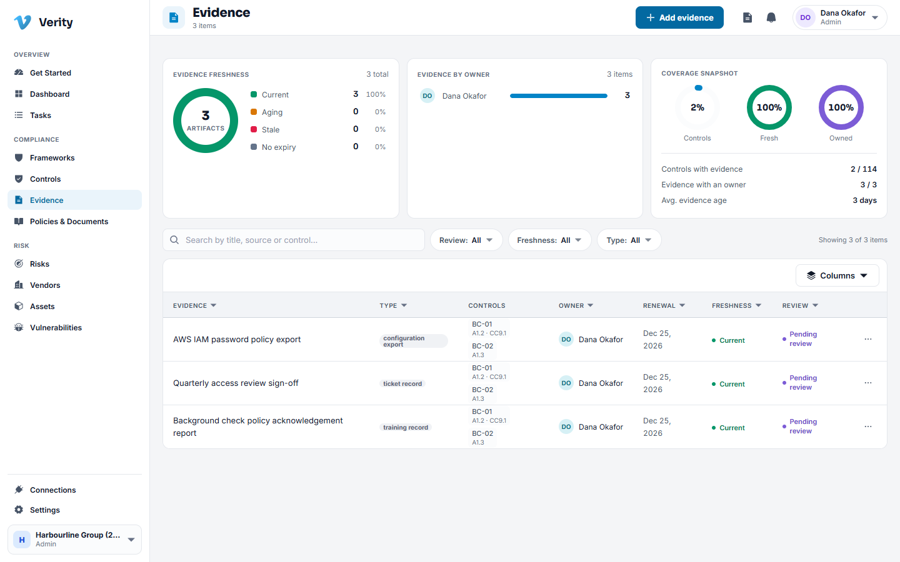
The register
Each row is one artefact: its title, type, who owns it, when it was collected, the controls it supports, and its freshness.
Freshness is the column people miss. Evidence expires. A password policy export from two years ago proves nothing about today, so every piece of evidence carries a renewal date and the register shows you what has gone stale.
Adding evidence
There are two kinds, and the difference matters.
A file is a copy Verity holds: a PDF, an export, a screenshot. It cannot change underneath you, which is exactly what an auditor wants.
A link points at something that lives elsewhere: a dashboard, a ticket, a shared drive. It stays current on its own, but whoever reads it later needs access to that system.
Walkthrough: attach evidence to a control
- Go to Evidence and click Add evidence, or open the control and use the Evidence tab so the control is already filled in.
- Choose whether you are uploading a file or recording a link.
- Give it a title a stranger would understand. "AWS IAM password policy export, September" beats "screenshot 3".
- Pick the type. The type sets a sensible default validity: a configuration export is good for 90 days, a policy document for a year, a log export for 30 days.
- Set the owner: the person who will be asked to refresh it.
- Attach it to the controls it supports. One artefact usually proves several controls, and attaching it once to all of them is correct.
- Save.
Walkthrough: use the mapping suggestions
Verity can propose which controls a piece of evidence supports.
- Open the evidence record.
- On the Controls tab, use the suggest option.
- You get a list of proposed controls with a reason for each. Nothing is attached yet.
- Approve the ones that are right and ignore the rest.
Reviewing evidence
Evidence gets reviewed so somebody other than the person who uploaded it agrees it proves what it claims.
- Open the evidence record.
- Read what is attached and which controls it is said to support.
- Use Review to accept it, or reject it with a reason.
A rejection is not a delete. The artefact stays with the reason attached, so the next person can see it was considered and why it was not good enough.
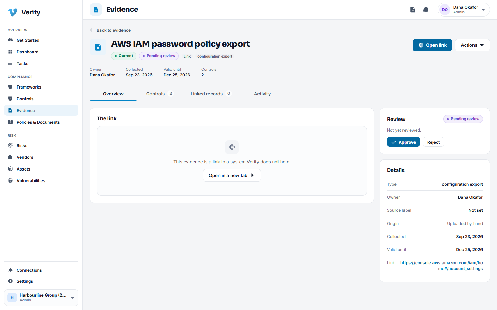
Keeping evidence fresh
- Filter the register by Freshness to find what has expired or is close to it.
- Each expiring item has an owner. That is who collects the new copy.
- Attach the new artefact and set a new renewal date. Keep the old one: it proves the control was operating in the earlier window, which is exactly what a Type II audit examines.
Where evidence comes from without anyone uploading it
- Connections. A connected system runs checks and attaches their output to the
controls those checks map to. See Connections.
- Other modules. A published policy, a completed task and a vendor's SOC 2
report can all act as evidence for the control they serve.
Chapter 5
Policies and documents
What this module holds
Your written commitments: policies, standards, procedures, guidelines and charters. Verity keeps the text, the version history, who approved each version, and who has read and signed it.
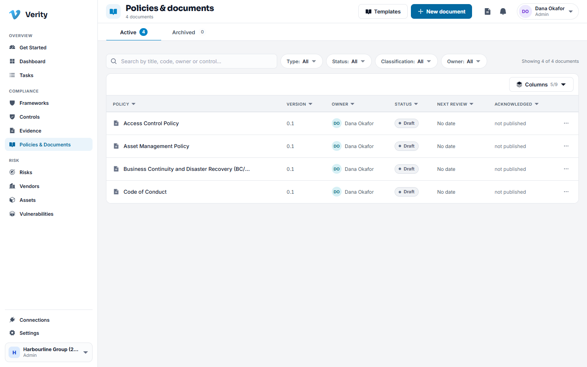
The life of a document
| State | What it means |
|---|---|
| Draft | Being written. Nobody outside the authors needs to see it |
| Needs approval | Sent for sign off and waiting on a decision |
| Approved | Every required approver said yes, not yet published |
| Published | Live. This is the version people are held to |
| Expired | Its review date passed without a new version |
| Archived | Retired on purpose, kept for the record |
A published document is never deleted. It is archived, and the text stays readable, because an auditor will ask what your policy said during the period under review.
Creating a document
You have three ways in, all from New on the register.
- From a template. Verity ships a library of policy templates. Pick one and you get a complete draft in your workspace's name, ready to edit. This is the fastest route and the one most teams should use.
- From scratch. A blank document with the same metadata.
- Upload a file. If your policy already exists as a PDF or Word file, upload it. Everything else (approval, publishing, acknowledgement) works the same way.
Walkthrough: draft a policy from a template
- Go to Policies and Documents and click New.
- Choose the template, for example Access Control Policy.
- Set the owner: the person accountable for the content, not necessarily the author.
- Set classification (internal, confidential, and so on) and the review cadence, which is how often this document must be revisited.
- Save. You now have a draft with its own code, for example POL-004.
The editor
Open the document and use Edit to open the full screen editor.
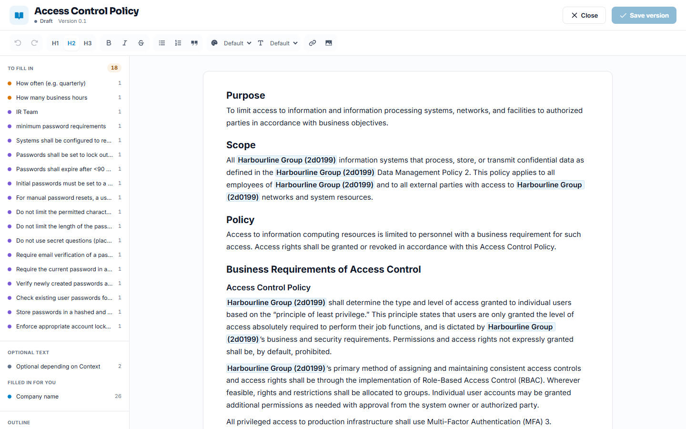
It is a normal rich text editor: headings, lists, tables, links. Two things are worth knowing.
- Every save makes a version. You can compare any two versions and restore an
earlier one. Nothing is lost by saving often.
- A change is major, minor or patch. You choose when you save. Major means
people need to read it again, and that choice drives whether a new acknowledgement is expected.
Mappings
The Mappings tab connects the document to the frameworks and controls it satisfies. Use Link controls and pick the frameworks and controls. That link is what lets a policy stand as evidence for a control.
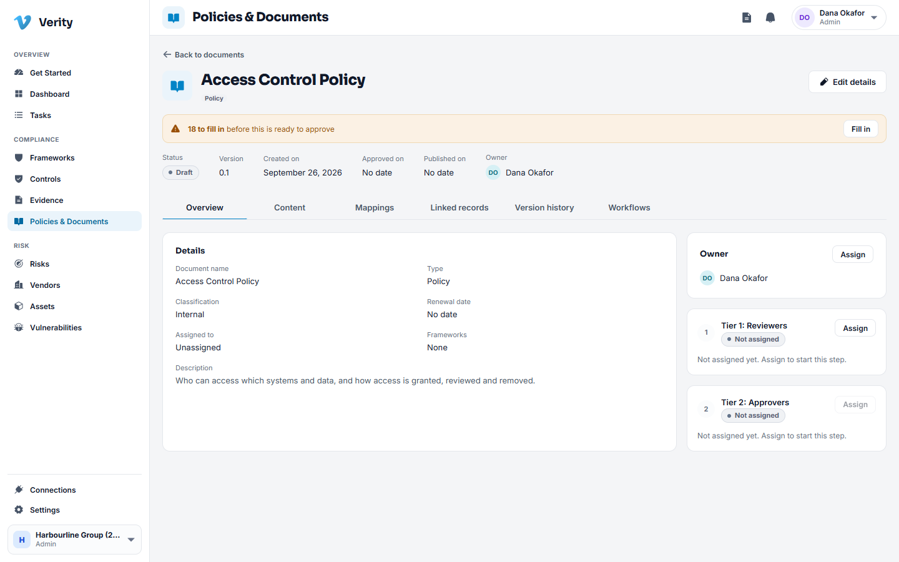
Approval
Approval in Verity is tiered. A tier is one round of sign off, and each tier can name people, roles or groups.
- Assign a named person and that person must decide.
- Assign a role or group and any one member of it can decide on behalf of all.
- More than one tier runs in order: tier 2 opens only when tier 1 has cleared.
Walkthrough: send a policy for approval
- Open the document and go to Workflows.
- On tier 1, choose who approves: a person, a role such as Security Officer, or a group.
- Assigning tier 1 starts the workflow and notifies the people in it. There is no separate send button.
- Each approver gets a notification and a dedicated review page. They read the document and type approve or reject to confirm the decision.
- When the last required decision lands, the document is published automatically.
Acknowledgement campaigns
Publishing is not the same as people having read it. A campaign asks named people to read and sign.
Walkthrough: run an acknowledgement campaign
- Open the published document.
- Use Start an acknowledgement campaign.
- Choose who must acknowledge. You can target individual people, whole roles or groups, and mix them.
- Set a due date and send.
- Each recipient gets a notification and a read and sign page. They cannot sign until they have opened the document.
- Track progress from the campaign page: who has signed, who has not, with a reminder you can send.
The campaign's record is the evidence: an auditor asking "how do you know staff read the policy" gets a list of names, dates and versions.
Reviews and expiry
A document with a review cadence gets a next review date. As it approaches, the owner is reminded. If the date passes with no new version, the document moves to Expired, which is visible in the register. Expired is not archived: the text is still live, it is just overdue.
Chapter 6
Tasks
What tasks are for
Everything in Verity eventually becomes work somebody has to do: collect this evidence, review that access list, fix the finding, update the policy. Tasks are where that work is assigned, tracked and closed.
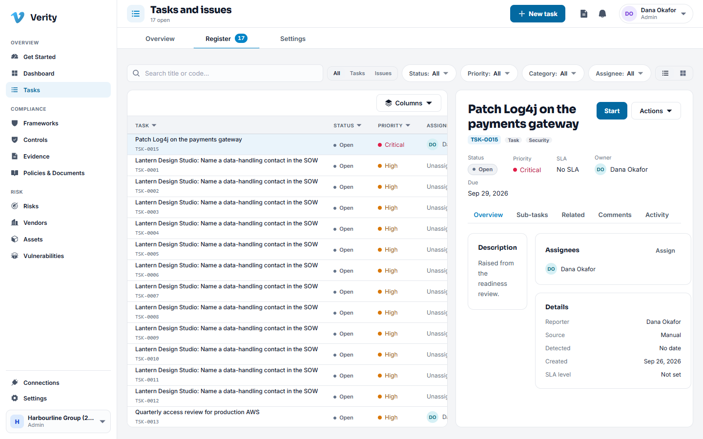
Tasks and issues
Two kinds share one register.
- A task is planned work. It has an owner and a due date.
- An issue is something that went wrong. It carries a severity, and it can hold
corrective and preventive actions underneath it.
The difference matters for an auditor: issues show that when something broke, you noticed, acted, and can show the actions you took.
States
| State | Meaning |
|---|---|
| Open | Raised, not started |
| In progress | Being worked |
| Blocked | Waiting on something outside the owner's control |
| Under review | Done in the owner's view, waiting on a check |
| Closed | Finished |
| Cancelled | Dropped on purpose, with a reason |
Walkthrough: raise and assign a task
- Go to Tasks and click New task.
- Give it a title that says what done looks like: "Collect the Q3 access review sign off from IT" rather than "access review".
- Choose a category (security, privacy, operations, data, regulatory, vendor or other) and a priority.
- Set the owner, who is accountable, and assignees, who do the work. They are often the same person.
- Set a due date.
- Save. The assignees are notified.
Walkthrough: work and close a task
- Open the task from the register or from your notifications.
- Move it to In progress using the status control in the header.
- Use Comments to keep the conversation in one place. Comments are part of the record.
- Attach whatever you produced: a file, a link, or a piece of evidence.
- Move it to Under review if somebody else checks it, or straight to Closed if not.
Every transition is recorded with the person and time in the Activity tab.
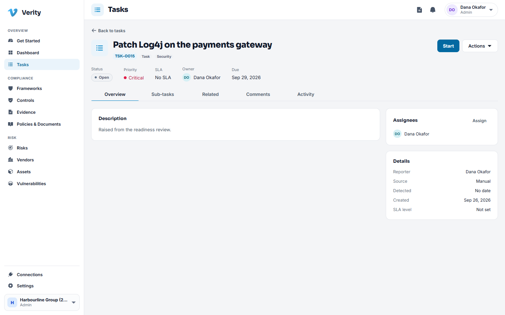
Service levels
A service level is a promise about how quickly work of a given priority gets done. Tasks that breach one are visible, escalated and countable, which is what turns "we fix critical issues quickly" into something you can show.
The Overview tab shows how you are doing against them.
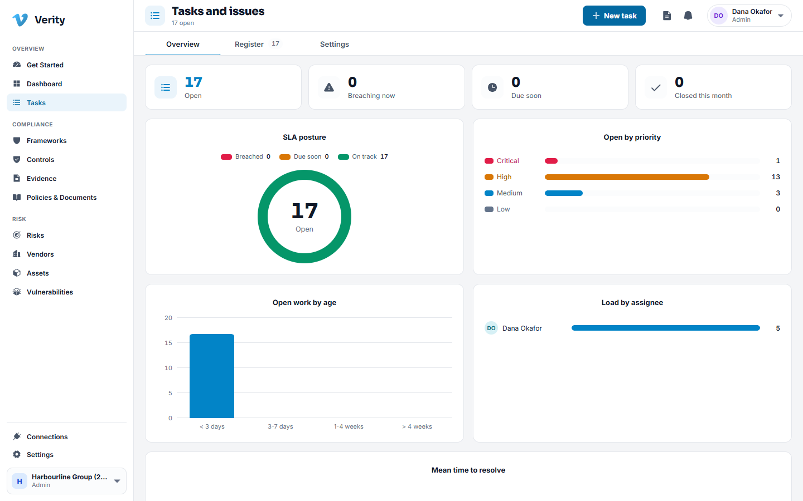
Approvals
Some work should not be closed on the word of the person who did it. A task can require approval: it moves to Under review, the approver gets a notification and decides, and their decision is recorded.
Corrective actions on an issue
Open an issue and use the Actions tab. Each action has its own type, owner and state:
- Containment: stop the bleeding now.
- Corrective: fix the thing that broke.
- Preventive: stop it happening again.
- Verification: check the fix actually worked.
An action can be promoted to a task of its own when it turns out to be a piece of work in its own right.
Sub-tasks and related records
- Sub-tasks break a large task into steps that can be assigned separately.
- Related shows what this task is attached to: the control, the finding, the
vendor or the document that caused it.
Settings
Tasks > Settings is where an administrator sets the service level targets, the severity matrix (how impact and urgency combine into a severity) and the automation rules that raise tasks on their own.
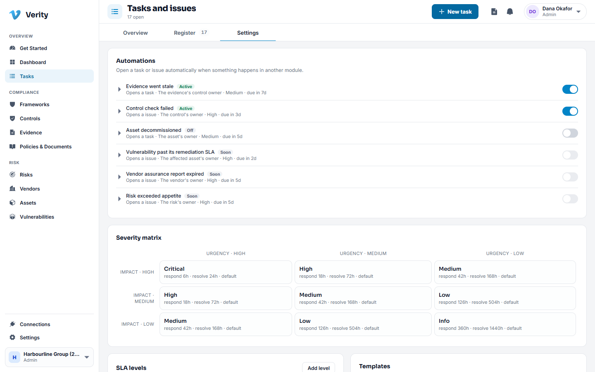
Chapter 7
Risks
What a register is
A risk register is a list of things that could go wrong, scored so you can argue about the right ones. Verity supports more than one register, because an operational risk register and a project register usually want different scales and different owners.
Each register owns its own:
- Scoring matrix: the likelihood and impact scales, and what counts as low,
medium, high or critical.
- Taxonomy: the categories and subcategories risks are filed under.
- Review cadence: how often a risk in it must be revisited.
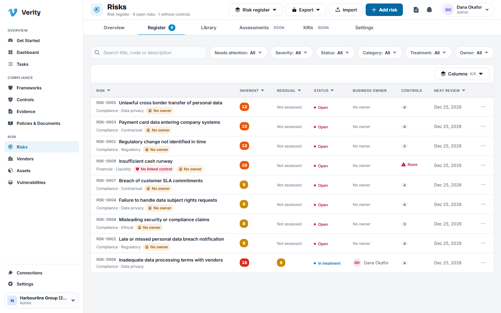
Scoring: inherent and residual
Every risk carries two scores.
- Inherent is the risk before your controls do anything.
- Residual is what is left once they do.
Both are likelihood times impact on the register's scale. The gap between them is the argument for the controls you operate, which is exactly what an auditor is looking for.
Walkthrough: add a risk
- Go to Risks and click Add risk.
- Write the title as a sentence with a consequence: "Customer data exposed through a misconfigured storage bucket" rather than "S3".
- Use AI Assist if you want a starting draft. It proposes a category, description, root cause, consequences, recommendations and an opening score. Nothing it suggests is applied until you click to use it, field by field or all at once.
- Choose the category and subcategory.
- Score the inherent risk, then the residual risk.
- Pick a treatment: mitigate, accept, avoid or transfer.
- Set the business owner and a treatment due date.
- Save.
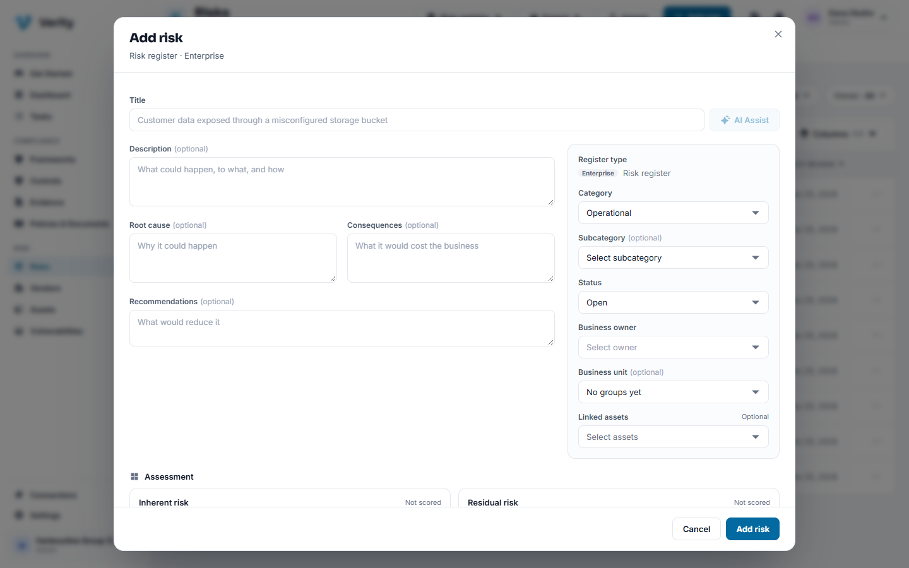
The states a risk moves through
| State | Meaning |
|---|---|
| Open | Recorded, not being treated yet |
| In treatment | Work is under way to reduce it |
| Mitigated | Treated down to its residual level |
| Accepted | Consciously tolerated, with an approval behind it |
| Closed | No longer relevant |
Walkthrough: treat a risk
- Open the risk and go to Treatment.
- Write the plan: the steps, who owns them and by when.
- Raise the actions as tasks so the work is tracked where all other work lives.
- On the Controls tab, attach the controls that reduce this risk. That link is what makes your control library an answer to your risk register rather than a separate exercise.
- As the work lands, update the residual score.
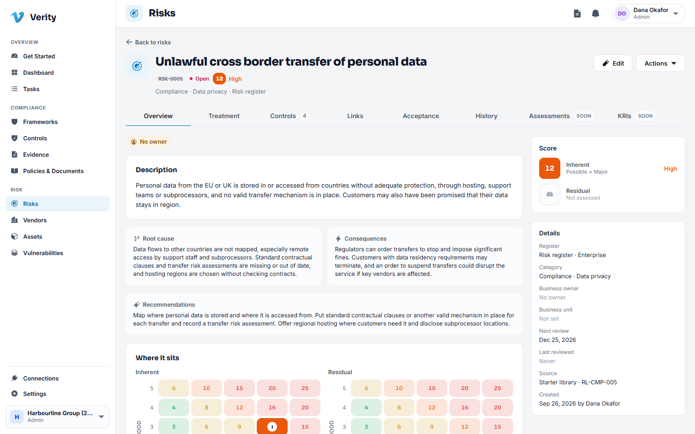
Walkthrough: accept a risk
Acceptance is the formal act of saying "we will live with this". It is separated from the rest of the record on purpose.
- Open the risk and go to Acceptance.
- Request acceptance: state the justification, the compensating measures and an expiry date.
- Somebody other than the requester decides. Verity refuses to let the same person both request and approve.
- On approval the risk moves to Accepted and carries its expiry.
- When the expiry passes, the acceptance lapses and the risk reopens on its own, so a decision made two years ago does not quietly become permanent.
The library and importing
- Library is a catalogue of common risks, already written and scored, that you
can adopt into a register. Faster than staring at an empty page, and you can edit anything you adopt.
- Import takes a spreadsheet. Download the template, fill it in, preview what
Verity read, then commit. The preview is where you catch a column that mapped to the wrong field.
Risks raised from elsewhere
A risk can arrive from another module:
- From a vendor finding: a weakness in a third party that you decide to carry as
your own risk.
- From an assessment or an import.
The register records where each risk came from, so "who raised this and why" is always answerable.
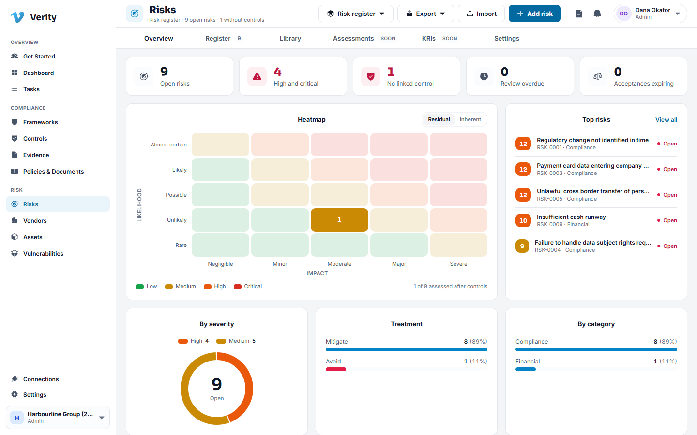
Settings
Risks > Settings is where an administrator manages registers: the scales, the bands, the categories and the review cadence.
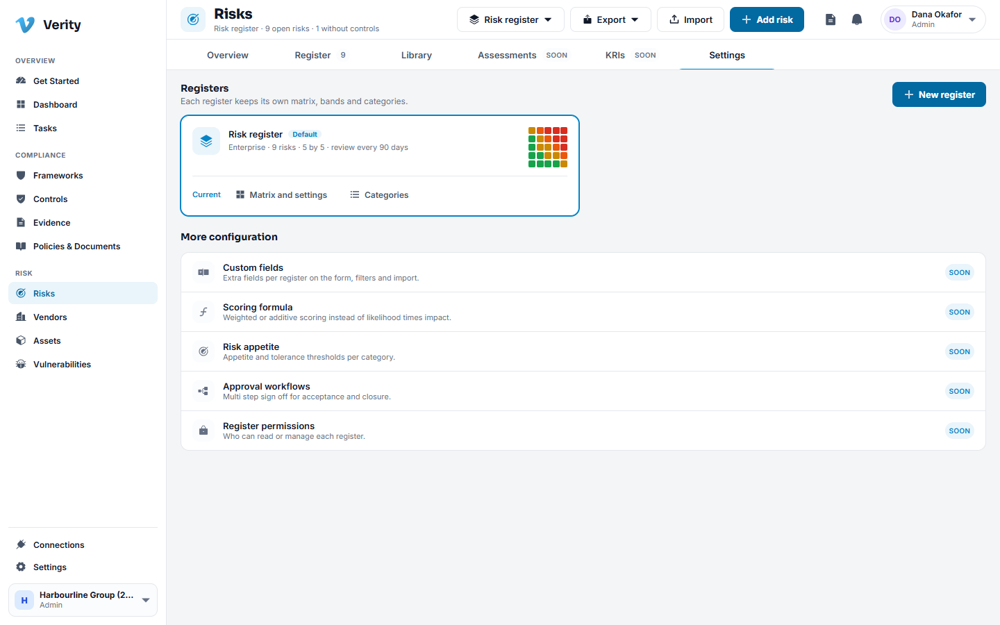
Tabs marked Soon, such as Assessments and KRIs, are placeholders for later work.
Chapter 8
Vendors
What this module does
Third party risk, end to end. Who you rely on, how much of your exposure sits with each one, what you asked them, what they answered, what you found, what you are doing about it, and what happens when the relationship ends.
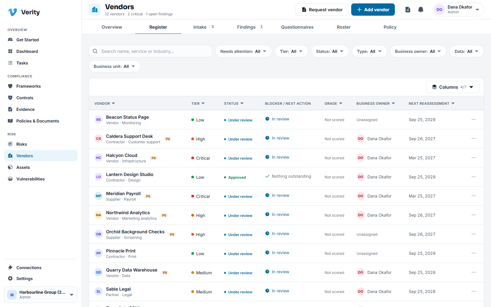
The shape of it
- A vendor is the organisation.
- An engagement is one thing you use them for. A vendor can have several, and
each is assessed on its own, because hosting production is not the same risk as running a design project.
- The lifecycle runs on the engagement, in twelve stages.
The twelve stages
| Stage | What happens |
|---|---|
| Intake | Somebody asks for the vendor, and the request is decided |
| Tiering | Five questions set how much diligence this engagement earns |
| Diligence | Reviewers are assigned and the paperwork is gathered |
| Questionnaire | The vendor answers, usually through the portal |
| Scoring | Their answers become a residual score and a grade |
| Findings | Gaps become findings with owners and due dates |
| Contracting | The contract, the DPA, the renewal terms |
| Approval | The gate: somebody accountable says yes or no |
| Onboarding | Access is granted and the relationship starts |
| Monitoring | Signals, alerts and document expiry are watched |
| Reassessment | The whole thing comes round again on a cadence |
| Offboarding | Access is revoked, data is returned or destroyed |
Stages do not skip. The workspace can mark a stage not applicable through policy, and the record shows it was skipped by policy rather than forgotten.
Getting a vendor into Verity
There are two doors, and which one you use depends on who you are.
Anyone: request a vendor
If you can see the vendor register you can ask for a new vendor. You are not creating one.
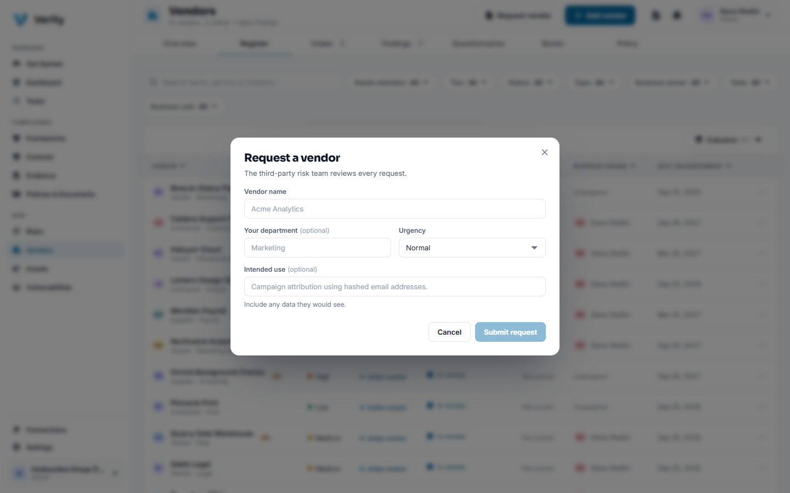
- Click Request vendor in the header.
- Give the vendor's name, your department, what you want them to do, and how urgent it is.
- Submit. Verity checks the name against the register. If it looks like a vendor you already use, the dialog stays open and shows you which, before anyone reviews it.
The request lands in Vendors > Intake. Nothing is in the register yet.
The third party risk team: add a vendor directly
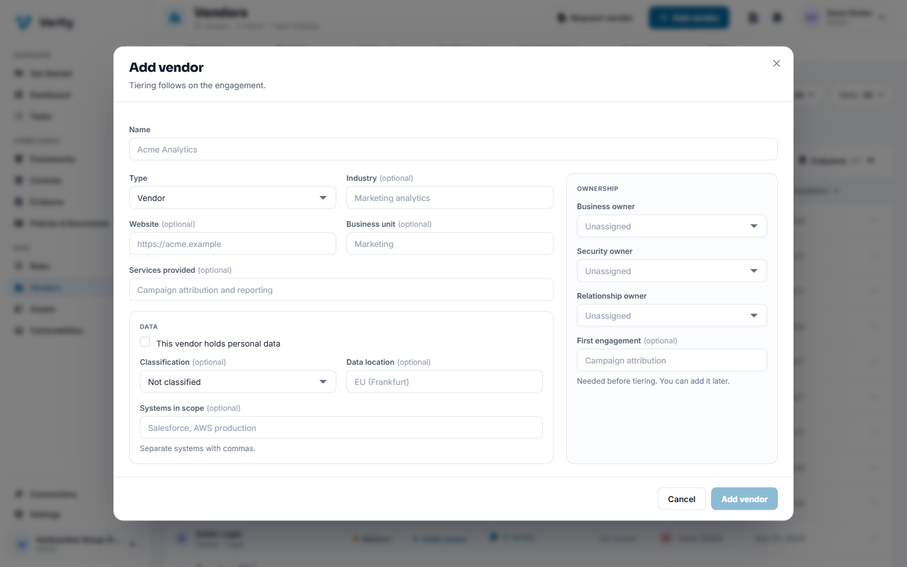
- Click Add vendor.
- Fill in the name, type, industry, website and business unit.
- Record what data they touch: whether they hold personal data, the classification, where it lives, which systems are in scope.
- Name the three owners: business, security and relationship.
- Name the first engagement. This is what gets tiered.
Walkthrough: decide an intake request
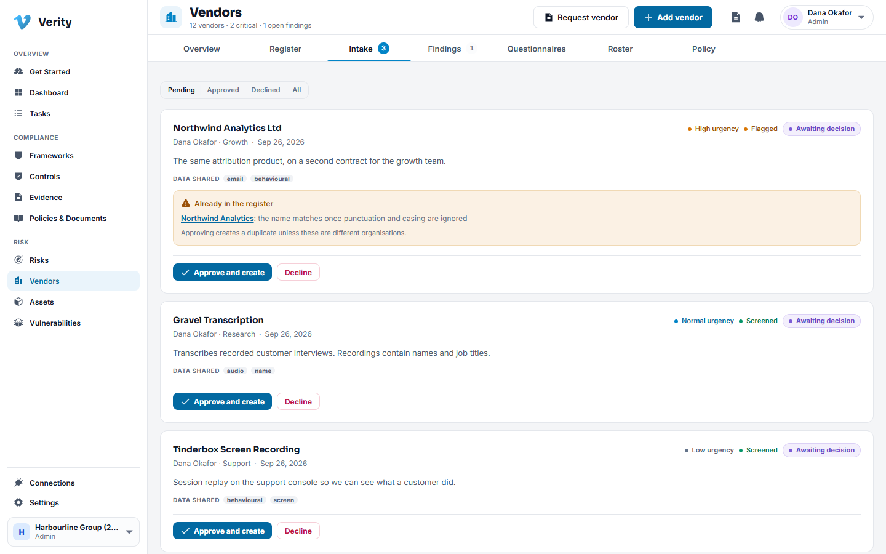
- Go to Vendors > Intake. Pending requests sort first, and the tab carries a count of what is waiting.
- Read the request. If screening flagged possible duplicates, the matching vendors are listed with links.
- Approve creates the vendor and its first engagement and takes you to it.
- Decline requires a reason. Nothing is created, and the reason is kept.
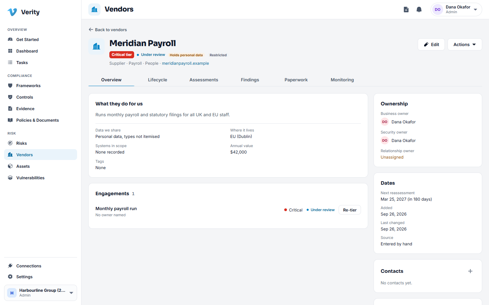
Tiering
Tiering decides how much diligence this engagement earns. Five questions, each scored 0 to 4:
- Data sensitivity: what they hold.
- Business criticality: what breaks if they stop.
- System access: how far into your estate they reach.
- Regulatory scope: whether regulators care about this relationship.
- Fourth party reliance: who they in turn depend on.
The answers are weighted and produce a band: Low, Medium, High or Critical. The tier drives the questionnaire the vendor is sent, the reassessment cadence, and how strict the approval gate is.
Walkthrough: tier an engagement
- Open the vendor and go to Lifecycle.
- Open the Tiering stage and answer the five questions.
- Save. The tier appears on the vendor header and on the engagement, and the twelve stages are planned.
Re-tiering later is allowed and honest about its consequences: if the new tier demands work the old one skipped, the affected stages reopen.
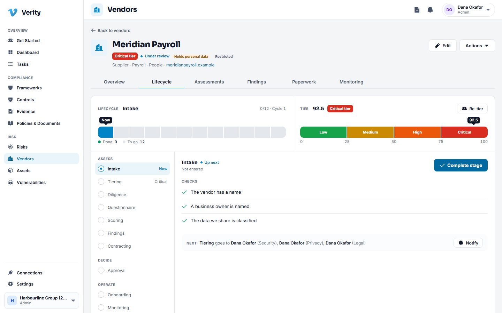
Questionnaires and the vendor portal
Your workspace builds its own questionnaires. Vendors > Questionnaires holds them, with a library to start from.
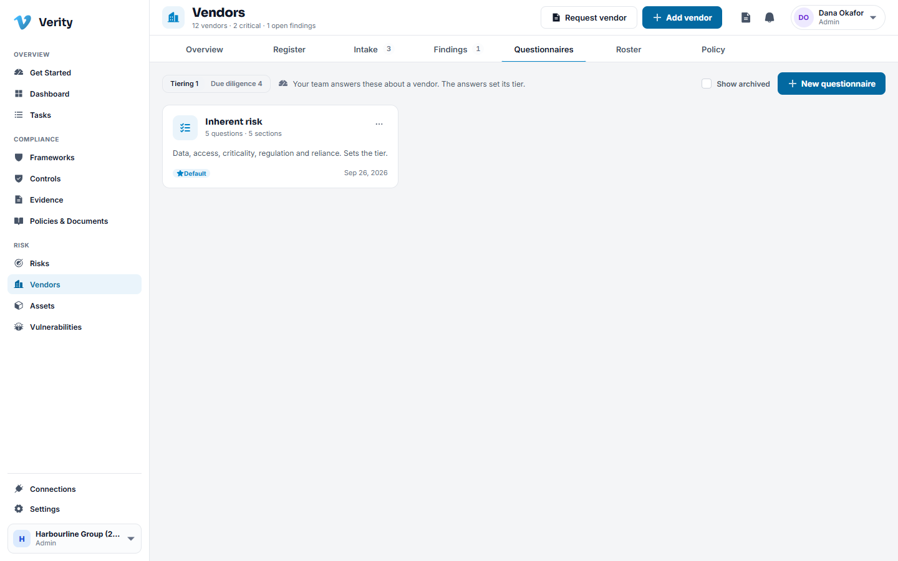
Two purposes:
- Tiering questionnaires are answered by your team, about the vendor.
- Due diligence questionnaires are answered by the vendor, and drive the
residual score and the findings.
Walkthrough: send a questionnaire to a vendor
- Open the vendor and add a portal contact with an email address.
- Go to Lifecycle > Questionnaire and dispatch the questionnaire for this engagement.
- Verity produces a single use portal link. Send it to the contact.
- The vendor opens the link with no account and no password, answers the questions, attaches files, and saves as they go.
- You watch progress from the Assessments tab.
Assessment, scoring and review
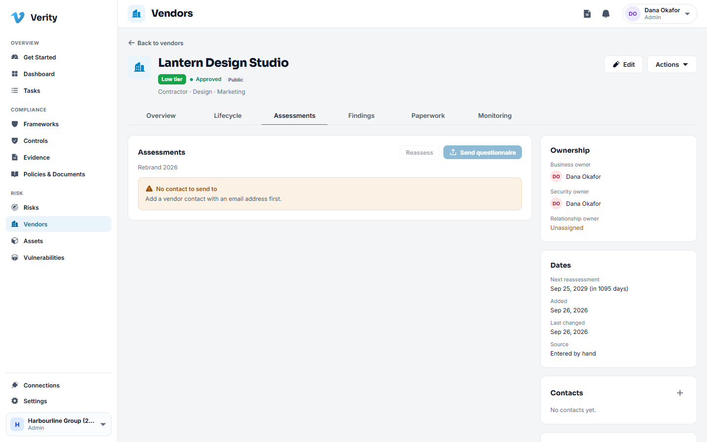
When answers come back, the assessment produces a residual score and a letter grade from A to F. A control the vendor does not have caps the score, and a missing critical control puts a floor under the risk no matter how well they answer everything else.
Reviews can be shared. Assign a domain of the questionnaire, or the whole review, to a colleague. Each assignment has its own state, and comments can be internal or shared with the vendor. The vendor sees only shared comments.
Findings
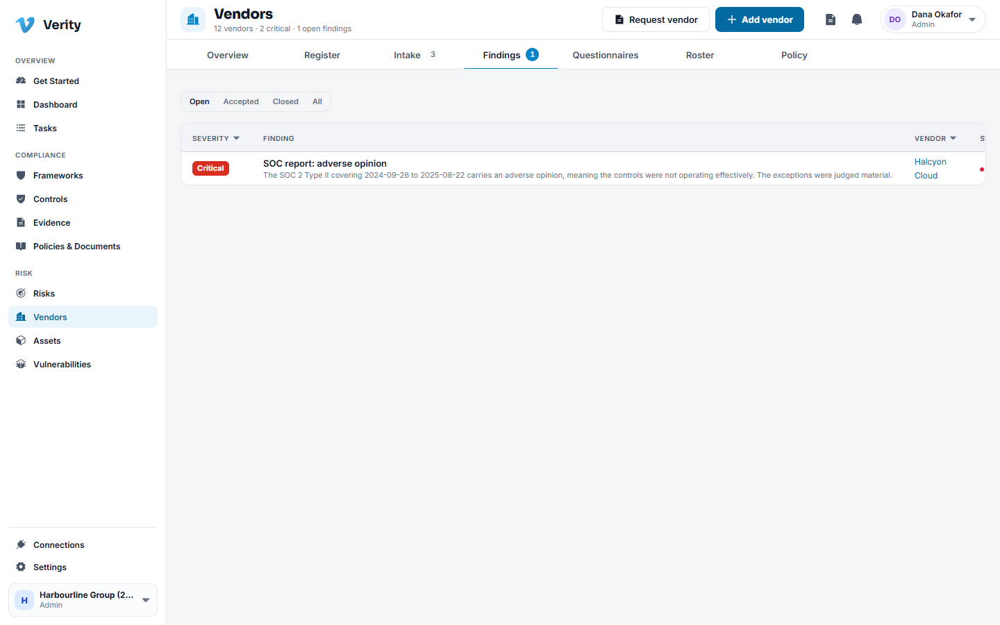
A gap becomes a finding: a severity, an owner, a due date driven by your policy, and a state. Findings can also be raised by hand, because not everything you learn comes from a questionnaire.
Your options on a finding:
- Remediate: the vendor fixes it, you verify and close.
- Accept: you tolerate it, with a justification and an expiry date. When the
expiry passes the finding reopens on its own.
- Raise a risk: promote it to your own risk register.
The approval gate
Approval is the one stage that is a gate. Verity refuses to let it clear while:
- any earlier stage is still open,
- any critical or blocking finding is open, on this engagement or vendor wide,
- the required reviewers have not been assigned.
Separation of duties applies: the person who requests approval cannot be the person who grants it. The gate clears itself as soon as the thing blocking it is resolved, so you do not have to remember to come back and unstick it.
Contracts and paperwork
The Paperwork tab holds contracts, DPAs, SOC 2 reports, certificates and your service level agreements. Each document carries an expiry, and expiring paperwork appears in monitoring before it lapses rather than after.
Monitoring
The Monitoring tab is the ongoing view: signals you record about the vendor (an outage, a breach report, a news item), alert rules that decide what a signal sets off, and the reassessment clock.
An alert rule can notify someone, raise a task, or bring the reassessment forward to today.
Shadow IT
Software that arrived without going through intake. Record a discovered app, then triage it: add it as a vendor (which raises an intake request), link it to a vendor you already have, or ignore it with a reason.
Offboarding
Ending a relationship is a stage, not a delete.
- Open the vendor and start offboarding.
- Work the checklist: revoke access, confirm data return or destruction, close contracts, settle invoices.
- Portal tokens are revoked as soon as offboarding starts.
- The vendor moves to archived when every exit check is complete, and the whole record stays readable.
Policy
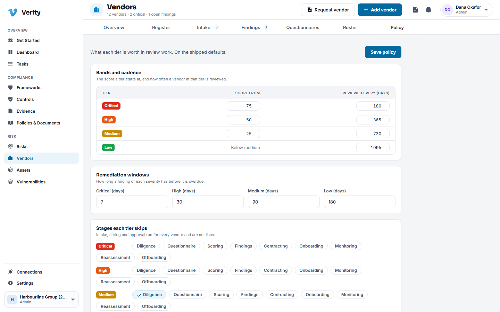
Vendors > Policy is where an administrator sets the rules the module runs on: the tiering bands, reassessment cadences per tier, the remediation window for each finding severity, which stages a tier may skip, and which roles must review.
Change the policy and new work follows the new rules. Work already under way keeps the policy it started under, so a vendor assessed last quarter can still be explained.
Overview
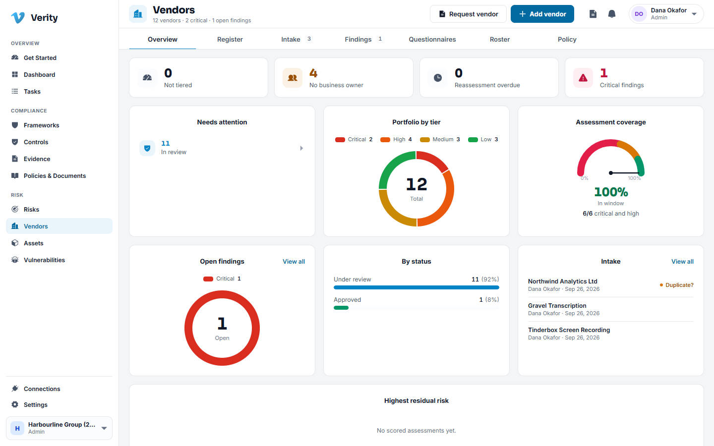
The Overview tab is the portfolio read: vendors by tier, what is awaiting a decision, open findings by severity, and what is due for reassessment.
Chapter 9
Assets
What the inventory is for
You cannot protect what you cannot list. The asset inventory is the record of what you run, how important each thing is, who owns it, and what depends on what. Every other module leans on it: a vulnerability is a weakness *on an asset*, a risk is usually about *an asset*, an auditor's first question about scope is *which assets*.
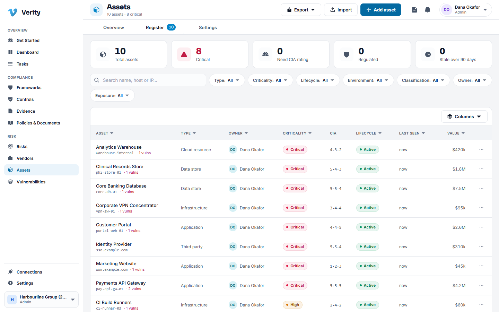
What counts as an asset
Six types: application, infrastructure, data, cloud resource, third party and business service. If it processes, stores or carries something you care about, it belongs here.
Walkthrough: add an asset
- Go to Assets and click New asset.
- Name it as your team refers to it: "Payments API Gateway", not "prod-01".
- Set the type and describe what it does in one sentence.
- Fill in identity where you know it: hostname, IP address, location, environment, operating system.
- Record classification and exposure: the data classification, whether it is internet facing, whether it is customer facing, its network segment, its business function.
- Rate confidentiality, integrity and availability from 1 to 5. See below.
- Name the owners.
- Save.
Criticality: how the tier is derived
You do not type a criticality. You rate the asset on three axes and Verity derives the tier:
- Confidentiality: how bad is disclosure.
- Integrity: how bad is silent corruption.
- Availability: how bad is downtime.
Exposure raises it: internet facing and customer facing assets score higher, and so does one carrying regulated data. The result is a score out of 10 and a tier of low, medium, high or critical.
If the derived tier is wrong for a reason a formula cannot see, you can override it, but the override asks for a reason and the record keeps both numbers. An auditor can see what the system derived and what a human decided.
Inventory hygiene
The panel on the right of every asset is the completeness score. Five checks, each worth twenty points:
- Primary owner
- Type
- Criticality
- Data classification
- CIA rating
Each is listed with a tick or a warning and what it found, so a score of 100 per cent is checkable rather than asserted. Under them is the freshness line: when the asset was last reviewed and when it is due again.
Mark reviewed does one thing: it records that a person looked at this record today and restarts the clock. It does not change the score, because the score is about fields and the clock is about attention.
Walkthrough: set your own review cadence
The default is 90 days for everything. Most teams want longer for low criticality assets.
- Go to Assets > Settings.
- Under Review cadence, set the number of days for each criticality tier. Anything from 7 to 1095 days.
- Save the row. The change applies immediately, and each asset's hygiene panel then reports the window it was judged against.
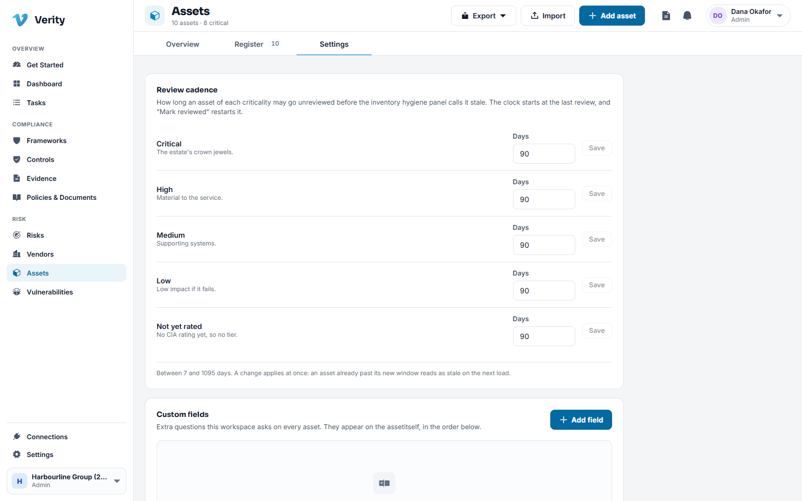
Dependencies
The Relationships tab records what depends on what: this application runs on that cluster, this service connects to that database.
- Open the asset and go to Relationships.
- Use Add dependency.
- Pick the other asset, the kind of relationship, and which way it runs.
One edge is stored once and read from both ends, so the same dependency reads "runs on the cluster" from the application and "is run on by the application" from the cluster. They can never disagree.
This is what answers "what else goes down with this" when you are triaging.
Vulnerabilities on an asset
The Vulnerabilities tab lists the open findings on this asset, and you can add one from here with the asset already filled in. See Vulnerabilities.
Linked records
Controls, risks, evidence, documents and vendors attached to this asset, in one place, with the ability to link more.
Lifecycle
An asset moves through planned, active, in maintenance, decommissioned and retired. Decommissioning is a guarded step: it records the disposal and closes the asset's open findings, because a finding on a machine that no longer exists is noise.
Importing a spreadsheet
Most teams arrive with a list already.
- Go to Assets and choose Import.
- Download the template so your columns match.
- Upload your file. Verity reads it and shows you what it understood, row by row, with errors called out before anything is created.
- Fix anything wrong in the sheet and upload again, or commit what parsed.
Custom fields
If your organisation tracks something this inventory does not ask for, add it.
- Go to Assets > Settings > Custom fields and click Add field.
- Name it, choose the type (text, long text, number, date, choice or yes/no), and for a choice field list the choices one per line.
- Mark it required if every asset must have it.
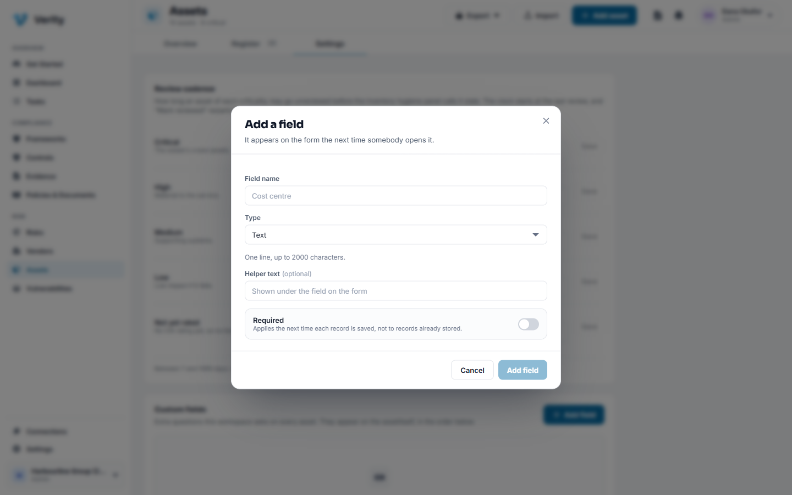
The field then appears on the asset form under "This workspace also asks", and on the asset record. Fields are archived rather than deleted, so a value written last year stays readable after you stop collecting it.
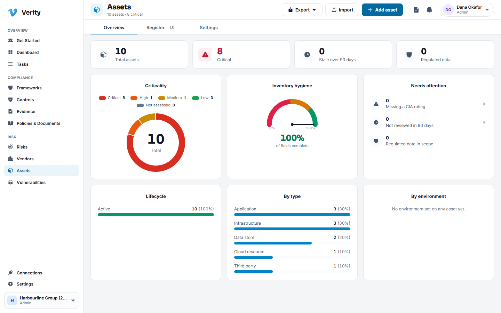
Chapter 10
Vulnerabilities
What this module does
Scanners produce thousands of findings. This module turns that pile into a list somebody can work, in the order that actually reduces your risk, with a clock on each one.
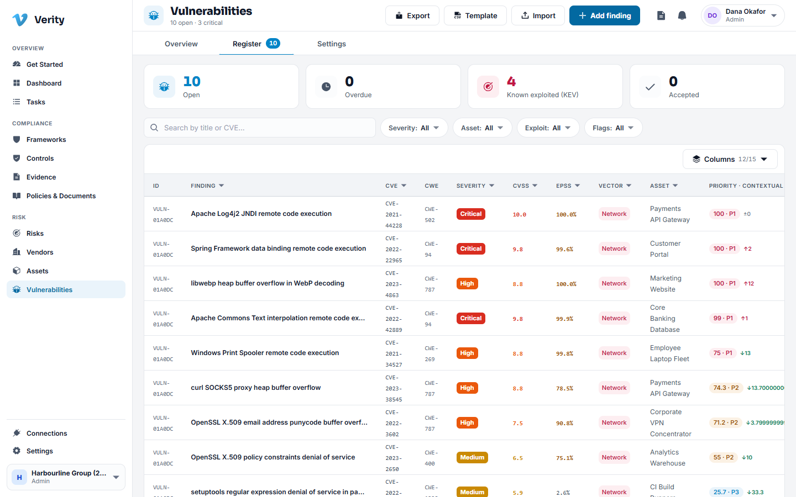
Definitions and findings
Two things share the module.
- A definition is the weakness itself, for example CVE-2021-44228 (Log4Shell).
It is the same weakness wherever it appears.
- A finding is that weakness *on one of your assets*, at one location. Two
servers with Log4Shell are two findings of one definition.
That split is why you can fix a finding on one host without the register pretending the whole CVE has gone away.
Priority: why the order is not just CVSS
A CVSS score describes the weakness in the abstract. Verity prioritises what it means *to you*, combining:
- the weakness: CVSS, whether an exploit exists, the EPSS probability that it will
be exploited, and whether it is on the Known Exploited Vulnerabilities catalogue,
- the asset: its criticality, whether it is internet facing, whether it carries
regulated data.
A medium CVSS on your payment gateway can outrank a high on a test box, which is the right answer. A finding on the KEV catalogue is floored at a high priority no matter what else is true, because something is being exploited right now.
Getting findings in
Walkthrough: import a scanner export
- Go to Vulnerabilities and choose Import.
- Give the report a name, for example "Quarterly external scan", pick the report type and name the tool.
- Upload the CSV. The file can be up to 10 MB.
- Verity matches each row to an asset in your inventory, deduplicates against what is already open, and tells you what it created, what it updated, what resurfaced and what it could not match.
Findings that resurface after being fixed are marked as such and carry a count, so a recurring failure is visible instead of looking like a new problem each time.
Walkthrough: add a finding by hand
- Click Add finding, or open an asset and add it from the Vulnerabilities tab, which fills the asset in for you.
- Enter the title, severity and affected asset.
- If you have a CVE identifier, enter it: Verity looks it up and fills in the description, score, vector and threat intelligence.
Working a finding
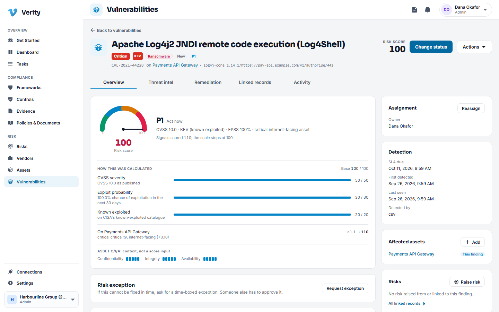
| State | Meaning |
|---|---|
| New | Just arrived, not triaged |
| Active | Triaged and confirmed |
| In progress | Being fixed |
| Pending retest | Fixed in the team's view, waiting on proof |
| Fixed | Verified as fixed |
| Resurfaced | Was fixed, has come back |
| Accepted | Tolerated on purpose, with an approval and an expiry |
| False positive | Not real, with a reason recorded |
A finding is never closed on assertion alone. Fixed means a scanner confirmed it or an approval was recorded.
Remediation windows
Every finding gets a due date from its severity. The shipped defaults are 15 days for critical, 30 for high, 60 for medium and 90 for low, with no clock on informational.
Change them in Vulnerabilities > Settings. A change applies to findings detected from then on, and does not silently move the due date on findings that already exist.
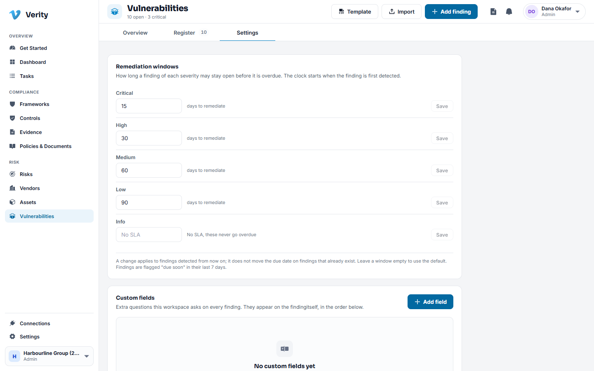
Findings are flagged "due soon" in their last seven days, and breached findings escalate to the owner.
Remediation plans
For work that is more than a patch, a finding carries a plan that moves through preview, approval, apply and verify. Each step is recorded, so the trail shows what was proposed, who approved it, when it was applied and how it was verified.
Exceptions and acceptance
Sometimes the fix is worse than the finding, or it cannot be done yet.
- Open the finding and request an exception.
- State the justification, the compensating controls and an expiry date.
- An approver decides.
- On expiry the acceptance lapses and the finding returns to the open register.
Custom fields
Scanners fill most of a finding. What they cannot know is your change ticket number, the business sign off, the maintenance window. Add those as custom fields.
- Go to Vulnerabilities > Settings > Custom fields and add a field.
- It appears on every finding under "Also recorded", where anybody with manage rights can fill it in.
Overview
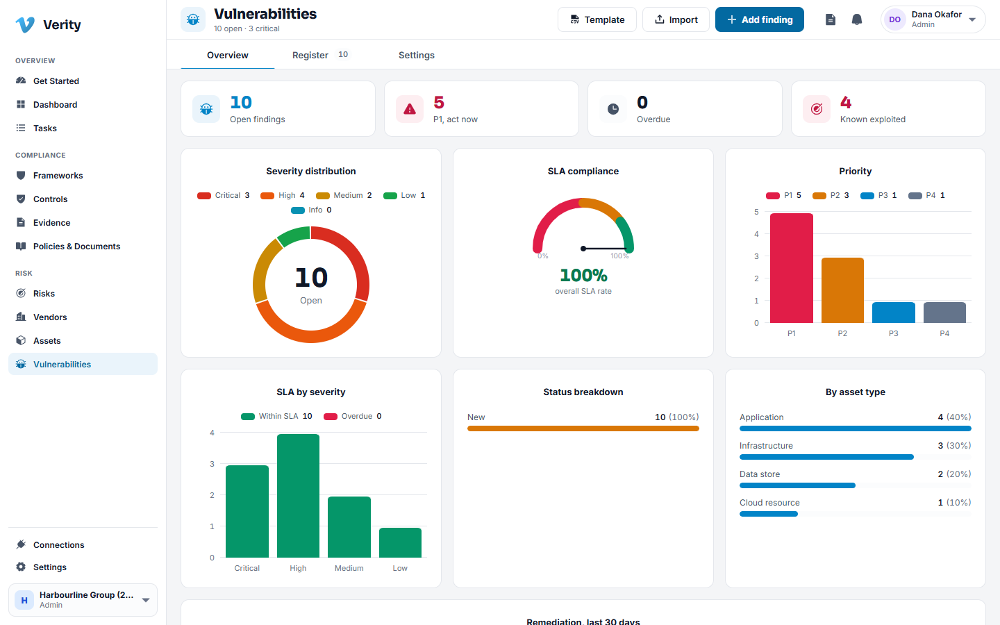
Open findings by severity, what is overdue, throughput over time, and where the concentration sits.
Chapter 11
Connections
What a connection does
A connection lets Verity check a system for you, on a schedule, and attach what it finds to the controls those checks answer. Instead of somebody screenshotting a setting every quarter, the setting is read every day and the evidence appears on its own.
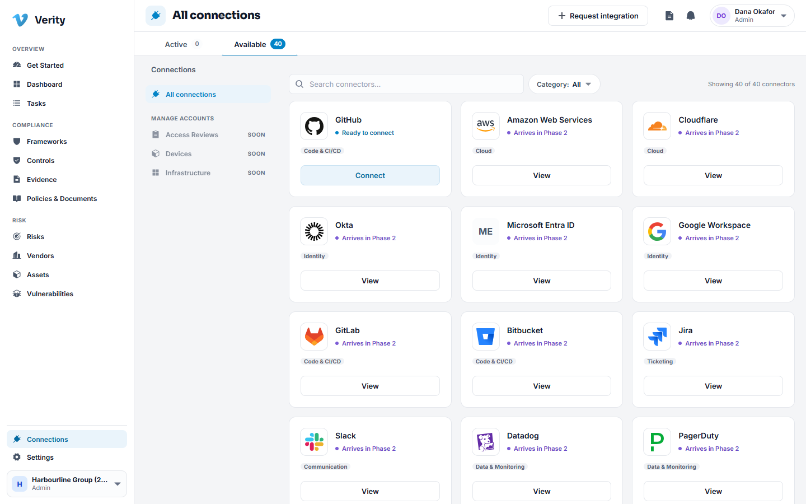
What is available today
GitHub is the first live connector. Later phases add identity providers, cloud accounts, device management and ticketing. Anything marked Soon on this page is not connected to real data yet.
You can register interest in a system that is not there yet using the request option. It records what you need so it can be prioritised.
Walkthrough: connect GitHub
- Go to Connections and choose Connect on GitHub.
- Give the connection a name, for example "GitHub, engineering org".
- Paste a personal access token with read access to the organisation you want checked. Read only is enough, and read only is what you should use.
- Save. Verity encrypts the credential before it is stored, and it never appears in a log or on a screen again.
- The first run starts right away. After that it runs on a schedule.
What the checks look at
The GitHub connector answers questions a SOC 2 auditor asks about how software gets built and released, for example:
- is two factor authentication required for the organisation,
- are branch protection rules in place on the default branch,
- are pull requests reviewed before merge,
- who has administrative access,
- are secret scanning and dependency alerts switched on.
Each check maps to the controls it can support.
Reading the results
Open a control and go to its Automation tab.
- Passing means the check ran and found what the control claims.
- Failing means it ran and found something else. The detail says what.
- Needs review means the check could not decide by itself.
The output is attached to the control as evidence, dated, so the control's evidence list fills without anybody uploading anything. Evidence is attached at most once a day unless the result changes, so a passing check does not bury the record in identical copies.
When a connection breaks
A connection whose token has expired or whose permissions were reduced shows as unhealthy on the Connections page with the reason. The checks stop rather than quietly report a pass. Reconnect with a fresh token and the schedule resumes.
Chapter 12
Settings and administration
This chapter is for whoever administers the workspace. Everything here sits under Settings at the bottom of the navigation.
People
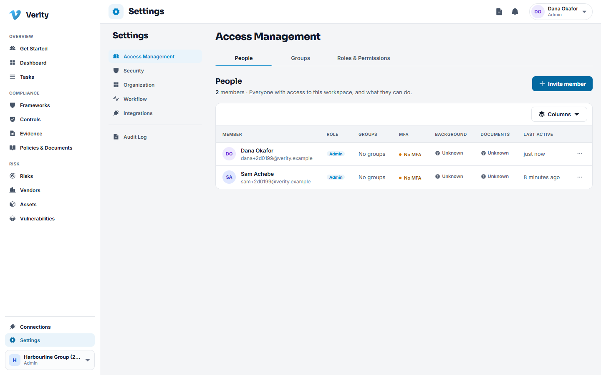
Walkthrough: invite someone
- Go to Settings > Access > People and click Invite.
- Enter their work email and choose the roles they should hold.
- For an external auditor or consultant, set an access window: the dates between which they can sign in. Outside those dates the account still exists but cannot get in.
- Send. They get an email, set their own password, and enrol in two factor authentication if your policy requires it.
Removing someone
Disable the membership rather than deleting it. Their name stays on the approvals they gave and the evidence they collected, which is the point: an audit trail with holes in it is not an audit trail.
Roles
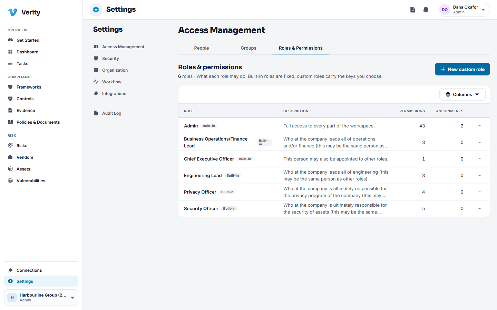
Verity ships six roles. Five of them are about accountability rather than access: they name who is answerable for an area, and they start with read access.
| Role | Starts with |
|---|---|
| Admin | Everything |
| Chief Executive Officer | Workspace read |
| Security Officer | Workspace, audit log, frameworks, evidence, vendors |
| Privacy Officer | Workspace, audit log, frameworks, vendors |
| Engineering Lead | Workspace, frameworks, evidence |
| Business Operations/Finance Lead | Workspace, frameworks, vendors |
You can create roles of your own and choose exactly which permissions they carry. Permissions read as module:action, for example vendors:manage or evidence:review.
Roles and what they allow
Access has two layers.
- The permission decides whether you can reach a screen at all.
- Object scope decides which rows you see once you are there. A control owner sees the controls assigned to them; an auditor sees the engagement window they were invited for.
Groups
Groups are teams: Engineering, Finance, the Security Council. They are useful in three places: assigning a control or task to a team, targeting an acknowledgement campaign at everyone in a department, and naming a group as an approver where any one member can decide.
Security
Settings > Security holds:
- Two factor authentication: whether it is required, and for which roles.
Requiring it for admins is the usual minimum.
- Password policy: length and complexity. The shipped rule is 12 characters
with mixed case, a digit and a symbol.
Organisation profile
Your legal name, trading name, registration number, address and primary contact. This is what appears on exported reports, so it is worth getting right before your first audit.
Custom fields
Two modules let you add fields of your own: Assets and Vulnerabilities. Each is configured on that module's own Settings tab, so the permission that guards the module guards its fields.
The audit log
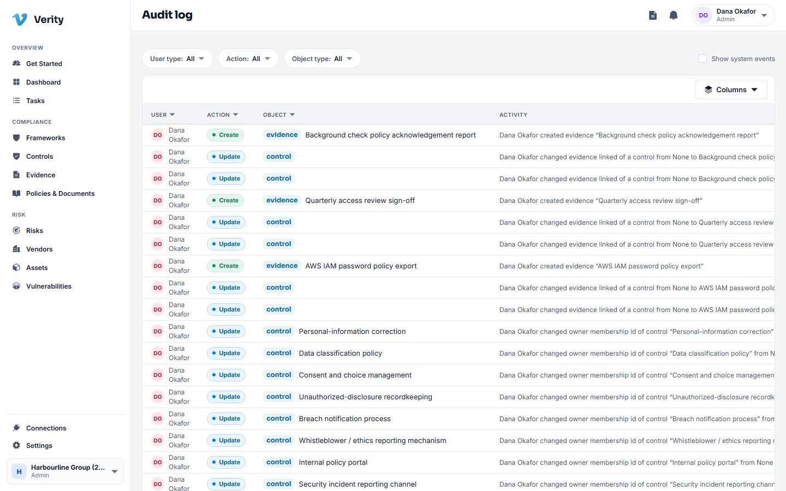
Every state changing action in the workspace writes a row here: who did it, when, what the record looked like before and what it looked like after.
The log is append only. It cannot be edited or deleted by anyone, including an administrator, and that is enforced by the database rather than by convention. When an auditor asks how you know your records have not been quietly rewritten, this is the answer.
Filter it by actor, by object type or by date, and export what you filtered.
Data isolation
Each workspace is sealed. A person who belongs to two organisations sees one at a time, and there is no screen, filter or export anywhere in the product that can show data from two workspaces together. This is enforced in the database itself, on every query, not in the interface.
Chapter 13
Glossary
Words this platform uses, and what they mean here. Where a word has a general industry meaning and a narrower Verity meaning, both are given.
Acceptance. A recorded decision to tolerate a risk or a finding rather than fix it. Always has a justification, an approver who is not the requester, and an expiry date. When the expiry passes, the thing reopens on its own.
Acknowledgement campaign. A targeted request for named people to read and sign a published document. The record of who signed, and when, is the evidence that a policy reached its audience.
Approval gate. A lifecycle stage that will not clear until specific conditions are met. The vendor approval stage is one: open findings and unfinished earlier stages block it.
Asset. Anything you run that processes, stores or carries something you care about: an application, a server, a dataset, a cloud resource, a business service.
Audit log. The append only record of every state changing action. Cannot be edited or deleted by anyone, including an administrator.
CIA rating. Confidentiality, integrity and availability, each rated 1 to 5. The three inputs from which an asset's criticality is derived.
Control. Something your organisation does to keep a promise. A control answers one or more framework criteria and is proven by evidence.
Criterion. A single requirement in a framework, for example SOC 2 CC6.1.
Criticality tier. Low, medium, high or critical. Derived for assets from the CIA rating and exposure; derived for vendor engagements from the five tiering questions.
Definition (vulnerability). The weakness itself, for example a CVE. Distinct from a finding, which is that weakness on one of your assets.
Engagement. One thing you use a vendor for. A vendor can have several, and each is tiered and assessed separately.
EPSS. Exploit Prediction Scoring System: the probability that a given vulnerability will be exploited in the wild in the next 30 days.
Evidence. An artefact that proves a control operates: a file Verity holds, or a link to something that lives elsewhere.
Finding (vendor). A gap identified in a third party, with a severity, an owner and a due date.
Finding (vulnerability). A weakness on one of your assets at one location.
Framework. A published set of criteria you are being measured against, for example SOC 2.
Freshness. How current a piece of evidence is, against the renewal date its type implies.
Group. A team of people in the workspace, usable as an assignee, an approver or a campaign target.
Inventory hygiene. The completeness score on an asset: five checks on the record plus a freshness clock on when a person last reviewed it.
KEV. The Known Exploited Vulnerabilities catalogue published by CISA. A vulnerability on it is being exploited now, and Verity floors its priority accordingly.
Membership. A person's place in one workspace. All ownership and assignment in Verity points at a membership, never at a global user, so nobody can be attached to a workspace they do not belong to.
Portal (vendor). The unauthenticated page where a vendor answers a questionnaire. Reached by a single use link that is shown once.
Register. The list view of a module: controls, risks, vendors, assets, findings, tasks, documents.
Residual risk. What is left after your controls act. Contrast inherent risk, which is the level before they do.
Review cadence. How often a record must be revisited. Set per criticality for assets, per tier for vendors, per document for policies.
Scope. What is in and out of an audit, and why.
Separation of duties. The rule that the person who requests something cannot be the person who approves it. Enforced on risk acceptance and the vendor approval gate.
Service level (SLA). A promise about how quickly work of a given priority or severity is completed. Breaches are visible and escalate.
Shadow IT. Software in use that never went through intake. Recorded as a discovered app and triaged into a vendor, a link to an existing vendor, or ignored with a reason.
Soon. A badge marking a screen that is not built yet. Nothing behind one holds real data.
Subprocessor. A third party your vendor relies on. Your fourth party.
Tiering. The five question assessment that decides how much diligence a vendor engagement earns.
Trust Services Criteria. The five SOC 2 categories: Security, Availability, Processing Integrity, Confidentiality and Privacy.
Workspace. One organisation's sealed area of Verity. A person may belong to several and sees one at a time.